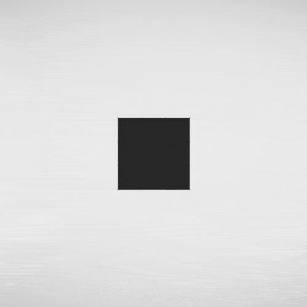
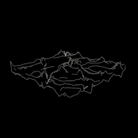

 At Seirenfilms we design experiences with Transmedia Storytelling. As a project manager, I work with clients and internal team and put together resources and activities in timelines to make things roll. We also develop ‘StoryHackers’ project, a nomad Storytelling lab which comes to life in universities and Festivals around the world, where we prototype transmedia and VR experiences.">
holahola
Book Surfing is a social initiative, which originated in Israel to bringing strangers together through sharing of texts. I co-founded the Argentina chapter of this book-lover club, and have since run 29 sessions in various venues around the city. My current roles include event-coordination, membership expansion, feedback analysis, marketing and book-surfing session moderator.">
BookSurfing
I provide community management services to the Buenos Aires branch of this TechStars brand, a mentorship-driven startup accelerator organization. My responsibilities include building partnership between allies and associates, managing and coordinating events, and continuously seeking new forms of community engagement.">
holahola
I have been part of the selection of movies, planning and production of the festival team since they had their first edition in 2011.">
FICIC
At Seirenfilms we design experiences with Transmedia Storytelling. As a project manager, I work with clients and internal team and put together resources and activities in timelines to make things roll. We also develop ‘StoryHackers’ project, a nomad Storytelling lab which comes to life in universities and Festivals around the world, where we prototype transmedia and VR experiences.">
SeirenFilms
 I provide community management services to the Buenos Aires branch of this TechStars brand, a mentorship-driven startup accelerator organization. My responsibilities include building partnership between allies and associates, managing and coordinating events, and continuously seeking new forms of community engagement.">
Startup Weekend